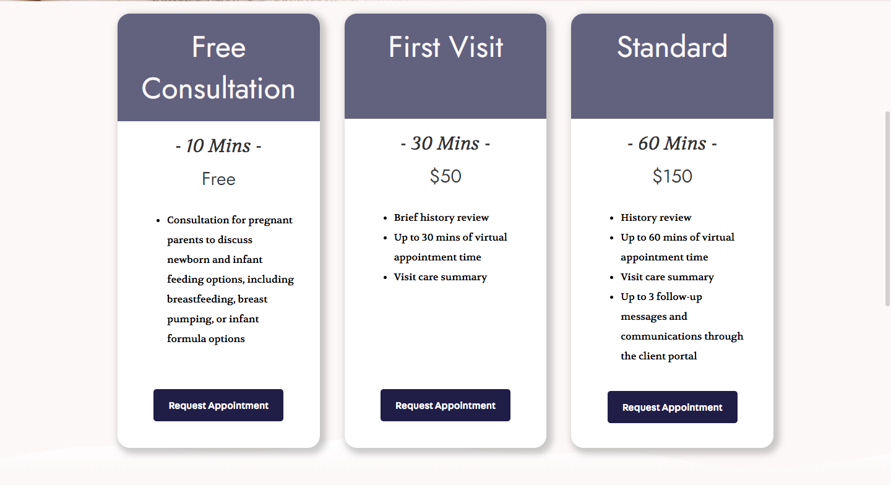
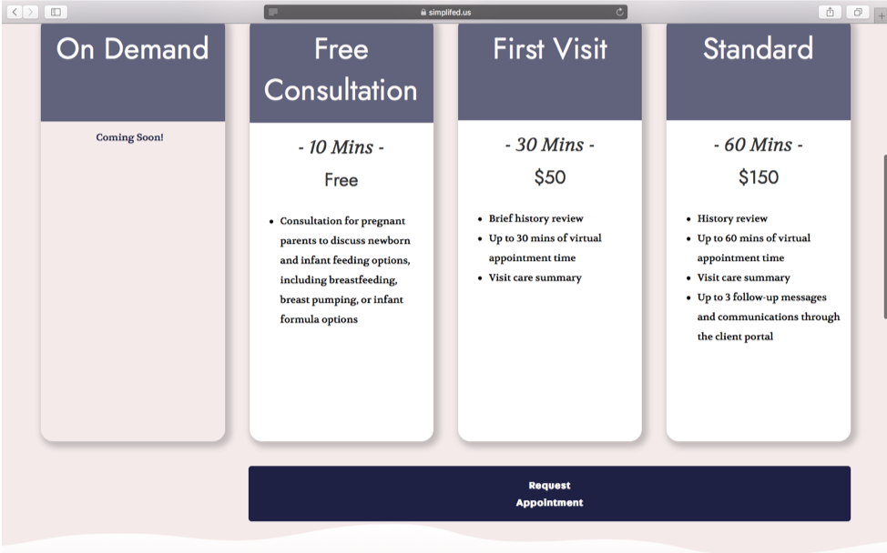
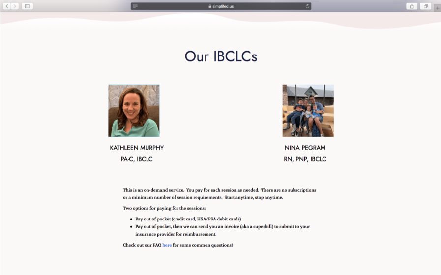
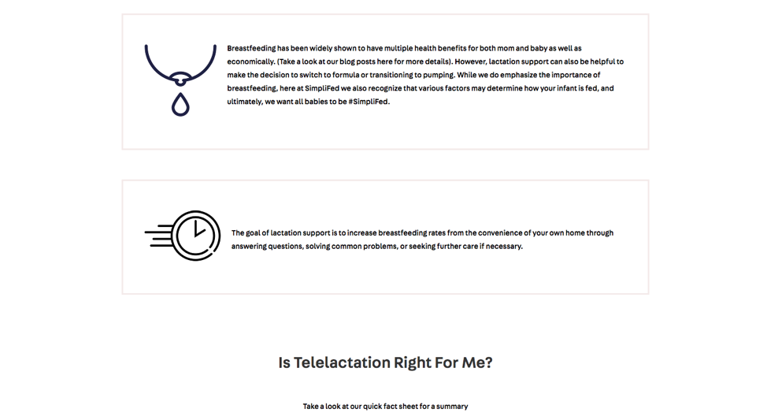
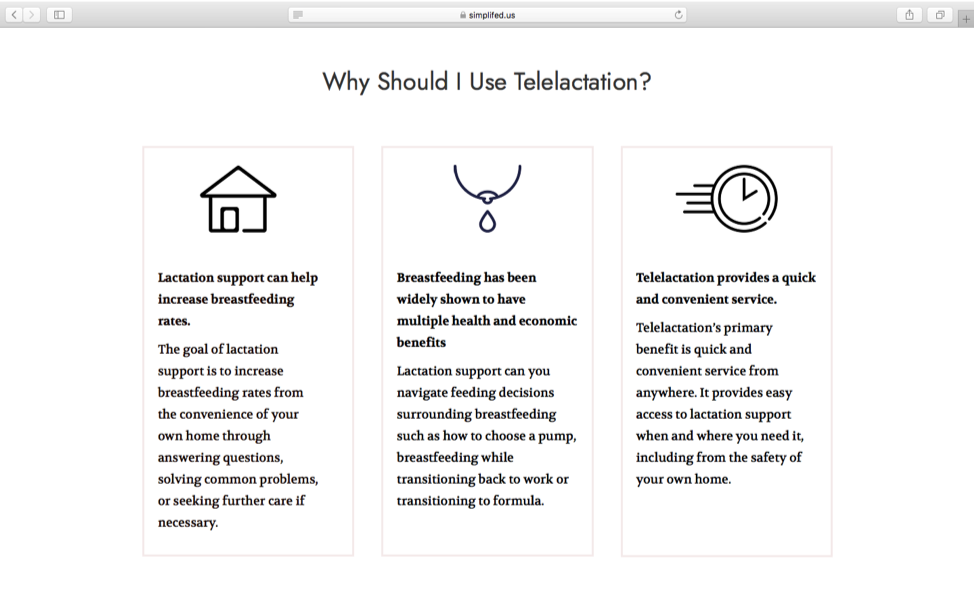
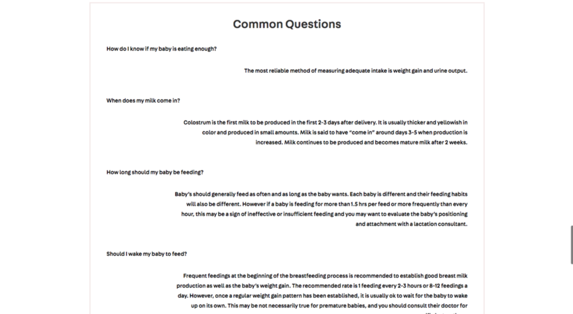
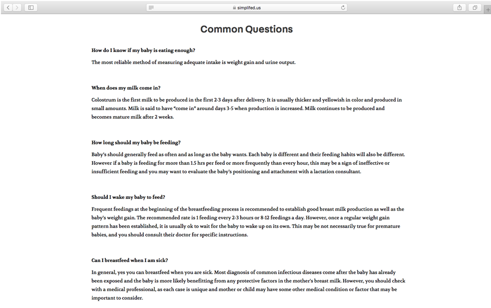

SUMMARY
I worked as a Product Management intern for SimpliFed, a start up in the virtual lactation space, to improve the overall user experience and user engagement of the site. SimpliFed is a HIPPA-compliant video service platform that connects new moms with IBCLCs, International Board Certified Lactation Consultants. During my internship, I mapped out objectives and key results and collaborated with design and development teams to update web pages. In addition, I met virutally with new moms to conduct user research and usability testing to understand their needs and pain-points with the current product.
THE PROBLEM
New moms often don't know where to look for advice during their pregnancy or the birth of their child and may not be aware of helpful resources. While many turn to family and friends for guidance, a professional opinion can provide personalized, crucial information as well as up-to-date industry solutions. Because of the coronavirus pandemic, traditional in-person appointments have been limited and less accessible which creates the need for an online platform.
THE SOLUTION
In order to provide necessary expertise to new moms, SimpliFed connects new moms with IBCLCs who can provide support and guidance during preganancy and the first months of the child's life. In addition, SimpliFed is a virtual platform, making its service accessible to new moms who are often on the go, whenever and wherever.
OBJECTIVES AND KEY RESULTS (OKRs)
Implement designs and prototype for On-Demand booking feature
Conduct user research to understand the needs of our target audience, new moms
Conduct usability testing to find any pain-points with the current interface of the platform
Improve the user experience of the site to increase customer engagement
USER RESEARCH
User Research Plan
Goal |
Plan of Action |
Timeline |
|---|---|---|
Understand stakeholders’ painpoints, needs, and goals surrounding infant feeding |
Conduct 20-minute interviews with new moms from online communities and friends |
Complete 6 interviews over the course of a 2-week sprint (3 interviews per week) |
Interview Questions
How many kids do you have and how old are they?
Tell me about your feeding experience when they were newborns.
How do you decide which feeding options to choose?
Did you encounter any challenges with feeding your babies? If so, what were the top challenges and what did you do to overcome them?
What did you do (if anything) during pregnancy to prepare for when your babies were born surrounding infant feeding?
Did you speak with anyone about those decisions?
Which sources did you pay attention to and why?
Which sources did you use and which sources did you sources on a recurring basis?
Why did you continuously go back to that source?
Where do you typically go to learn about new information when they were babies?
What suggestions would you give other new moms that you wish you had known?
Can you introduce me to 1-2 other people to interview?
Interview Notes Compiled
After my team and I conducted all interviews, we compiled individual notes from each interview into one master doc in order to visually represent our findings.
User Research Key Insights
From our complied interview notes, I was able to easily parse through the document to find clear trends within the data. I grouped the findings by different revelant categories.
Breastfeeding vs Formula:
Breastfeeding is preferred but formula may be necessary due to certain medical conditions (acid reflux, insufficient glandular tissue, tongue tie, colic etc.)
Research and Preparation:
Talked to family members and friends
Buying breastfeeding pillows and pumps
Read online sources and books
Took birthing classes
Talked to lactation consultant and doctor
Other Sources:
Online reviews
The Science of Mom
The Womanly Art of Breastfeeding
Babycenter.com
What to Expect When You’re Expecting
Facebook Mom Group Chats
Challenges:
Not enough supply
Outdated solutions to lactation problems
Not having help in the wee hours of the night
Outdated industry solutions to breastfeeding (formula, pumps etc.)
Physical discomfort
Unfamiliar lifestyle and clothing
Difficulty maintaining consistency and collectedness throughout the process
USABILITY TESTING
Usability Test Questions
What is the first thing that catches your eye?
What is the first thing you read on the website? From that, what do you understand about us?
Show me how you sign up for an appointment. As you do this, could you speak out loud your steps?
Read through the appointment options and choose one. Why did you choose that one? Walk me through how you sign up for that type of appointment. As you do this, could you speak out loud your steps?
What are IBCLCs? Where can you find information about them?
If you were interested in becoming a provider at SimpliFed, how would you find a place to sign up to work with SimpliFed?
You want to find out information about your upcoming appointment. How will you contact us? Walk me through how you find this information.
If you wanted to find us on social media, how would you find us through this page?
Any other feedback or observations surrounding our site?
Metrics
How long is it taking the tester to do said action?
How many questions do they ask us while navigating?
Do they find themselves scrolling back and forth too often?
How long did they take to pick an option from the scheduling page?
Usability Testing Key Takeaways
Mailing list stands out - could be distracting
Users wondered if they had to sign up to the mailin list before using the site
Users would like to know more information about the IBCLCs they are signing up for before they actually sign up in Simple Practice on the Schedule Page
Users are presented with all options once they already chose the type of appointment they want which could be confusing
Some users prefer email over a contact form
Social media and email should be included on the contact page
Users wondered why they had to put their card information in if they aren’t being charged
Users wanted more information about how to get reimbursements from insurance
IMPROVING UX
Based on the user research and usability testing, my team and I made several changes to improve the user experience of the site. A drop-dwon menu with subpages was added to improve the SEO of the site. In addition, four pages were redesigned: Schedule, Telelactation, Breastfeeding Complications, and Breastfeeding Support.
Schedule Page
Original Design
Pain-point #1 - Lack of text information when the displayed to the user when he/she first opens the page
Pain-point #2 - The Request Appointment button takes the users to the same pop-up window in Simple Practice, a HIPPA compliant video-calling platform, to schedule an appointment
On-Demand Call Feature Sketches
In addition to creating solutions to the two pain-points listed above, my team and I added a fourth schedule type option to implement an On-Demand calling feature that will be available shortly. I designed different user flows, placing the call to action in two different locations. In the first flow, the user is presented with two options on the homepage: Schedule an Appointment or Talk to a Consultant. In the second flow, the user is not presented with the option to talk to a consultant on demand until he/she clicks on the Schedule an Appointment page. Ultimately, my team and I decided to go with the second flow because in this flow, the user must view all available options before making a decision. This provides the user with more information and prevents them from potenitally missing an option that works better for them.
Final Implementation
In the final implementation of the schedule page, we decreased the height of the banner decreased (which becomes consistent across all pages) in order to provide more context for the user. In addition, we added an Available Schedule Options header which provides more details about the content of the page for the user.
We decided to go with the second option with the four boxes displayed vertically in order to demonstrate equality between all the options. In our usability testing, we found that user were confused about why there were three separate buttons that lead to the same pop-up box appearing on the screen once clicked on. The request appointment button applies to the three types of appointments because of the pop-up box in Simple Practice, so we decided to only include one button instead of three separate buttons leading to the same link to avoid confusion for the user.
In our usability testing, we found that users wanted more information about the people they are signing up for appointments with on the Schedule page so we included a section called Our IBCLCs to help users understand who they will be talking to.
Telelactation Page
Original Design
Pain-point #1 - In the design of this page, the text is center-aligned which decreases reability for the user.
Pain-point #2 - In addition, the information in the Why Should I use telelactation section is difficult to read as there is too much information creating an overwhelming experience for the user. Because the information is stacked in rows, this signfies that some sections are more important than others.
Final Implementation
In the final implementation, the banner added for consistency with other pages and text is left-aligned to increase readability.
In the redesign of the Why Should I Use Telelactation Section, several changes were made to improve the readability of the text. We decided to use columns instead of rows to signify equality across all sub-sections and decrease the width of the text across the page. In addition, we created titles to emphasize key points of each box.
Breastfeeding Complications Page
Original Design
In the original design of the page, the text is center aligned and the images too large which could be jarring for users.
In the common questions section, the questions are left aligned and responses are right-aligned which could be confusing for the user.
Final Implementation
In the final implementation of this page, the banner is added for consistency with other pages and the graphics are smaller. Text is left-aligned to increase readability.
Finally, the text in the common questions section is all left-aligned.
Breastfeeding Support Page
Final Implementation
Following the same usability principles as the other pages employ, the breastfeeding support page was modified.
DATA ANALYTICS
Over the course of August 15th to December 15th, 2020 the following metrics were recorded.
1.88k users
2.64k sessions
1.85k new users
Avg session duration: 1:34
Bounce rate: 36.44%
Pageviews: 7.2k
Pages/Session: 2.73
Number of Sessions per User: 1.4
CONCLUSION
I enjoyed working collaboratively with the design and development teams as well as Andrea
and the rest of the SimpliFed team to help enhance the site. Reflecting on my research, I
think that the usability testing was the most useful part of the research, resulting in
actionables I could take to improve the site. However, understanding the users' motivations,
desires and challenges was essential in thinking about the product vision and the purpose of
the On-Demand calling feature. I think that I could have spent more time in understanding the
users and brainstorming other potential features to improve their experience on the site.
In terms of the user interface designs, I think much progress was made in improving the
readability and making content more accessible to the users, as indicated by the user research.
As a product management intern, I think I should have investigated metrics more, specifically
tracking and analyzing metrics relating to calls to action on the page such as when the user
clicks on a button or signs up for an appointment, as those metrics would be more telling of
our progress and what needs improvement. Overall, my favorite part of the experience was
acting as the intermediary between the design and development teams and planning our goals
and course of action to achieve them. I'm excited to see how SimpliFed evolves in the future!
This website was created by Chloe Kanders, Copyright 2020.